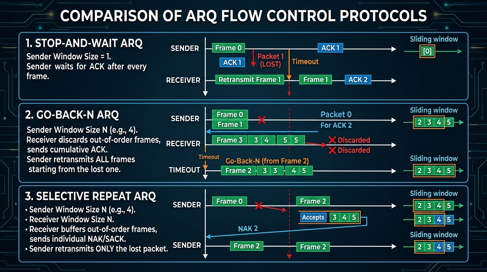
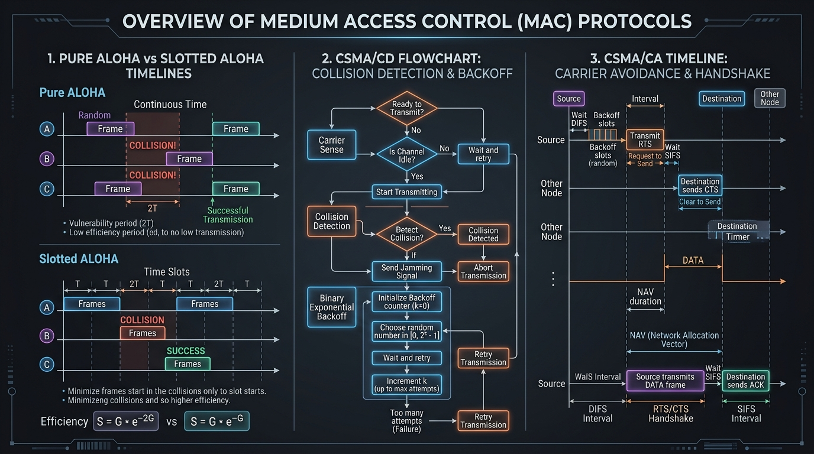

Master Sliding Window ARQ protocols (Stop-and-Wait, Go-Back-N, Selective Repeat) and MAC layer Medium Access Control protocols (Pure/Slotted ALOHA, CSMA/CD, CSMA/CA, CDMA).
Flow control prevents a fast sender from overwhelming a slow receiver with data. ARQ (Automatic Repeat Request) protocols combine flow control with error control by retransmitting lost or corrupted frames.
In bi-directional data transfer, instead of sending a separate ACK frame, the acknowledgement is embedded (piggybacked) inside the next outgoing data frame from the receiver. This saves bandwidth and improves channel utilization.
The sender transmits **one frame** and stops, waiting for an Acknowledgement (ACK) before sending the next frame. If an ACK doesn't arrive before the timer expires, the sender retransmits the frame.
The sender can transmit **multiple frames** (up to window size Ws) without waiting for an ACK. The receiver accepts frames **in strict order only**. If a frame is lost or corrupted, the receiver discards all subsequent out-of-order frames, and the sender must **go back and retransmit all frames** starting from the lost frame.
The sender transmits multiple frames. The receiver maintains a window size Wr > 1 and **buffers out-of-order frames**. The sender **retransmits ONLY the specific frame** that was lost or corrupted (using negative ACK or timeout).

| Feature | Stop-and-Wait ARQ | Go-Back-N ARQ | Selective Repeat ARQ |
|---|---|---|---|
| Sender Window (Ws) | 1 | 2m − 1 | 2m−1 |
| Receiver Window (Wr) | 1 | 1 | 2m−1 |
| Sequence Numbers Needed | 2 (1-bit: 0,1) | 2m (m-bit) | 2m (m-bit) |
| Out-of-Order Frames | N/A (Disallowed) | Discarded | Buffered ✓ |
| Retransmission | Single frame on timeout | Entire window from lost frame | Only the specific lost frame |
| ACK Type | Individual ACK | Cumulative ACK | Selective / Individual ACK |
| NAK (Negative ACK) | No — uses timeout only | No — uses timeout / cumulative ACK gap | Yes — receiver sends NAK for specific missing frame |
| Buffer Requirement | Sender only (1 frame) | Sender only (Ws frames) | Both Sender & Receiver (Ws + Wr frames) |
| Complexity | Lowest | Moderate | High (buffers at both ends) |
| Bandwidth Usage | Lowest (idle waiting) | Medium (retransmit extra) | Highest (retransmit minimum) |
| Efficiency Formula | η = 1/(1+2a) |
Ws ≥ 1+2a → η = 1 Ws < 1+2a → η = Ws/(1+2a) |
Ws ≥ 1+2a → η = 1 Ws < 1+2a → η = Ws/(1+2a) |
| η at a=1 (1+2a=3) | 0.33 (33%) | 1.0 ✓ (100%) — Ws=7≥3 | 1.0 ✓ (100%) — Ws=4≥3 |
| η at a=3 (1+2a=7) | 0.14 (14%) | 1.0 ✓ (100%) — Ws=7≥7 | 0.57 (57%) — Ws=4<7 |
| η at a=5 (1+2a=11) | 0.09 (9%) | 0.64 (64%) — Ws=7<11 | 0.36 (36%) — Ws=4<11 |
| a = Tp/Tt | 1+2a | Stop-and-Wait (η) | GBN Ws=7 (η) | SR Ws=4 (η) |
|---|---|---|---|---|
| a = 0 | 1 | 1 (100%) | 1 (100%) | 1 (100%) |
| a = 0.5 | 2 | 0.5 (50%) | 1 (100%) ✓ | 1 (100%) ✓ |
| a = 1 | 3 | 0.33 (33%) | 1 (100%) ✓ | 1 (100%) ✓ |
| a = 2 | 5 | 0.20 (20%) | 1 (100%) ✓ | 0.80 (80%) |
| a = 3 | 7 | 0.14 (14%) | 1 (100%) ✓ | 0.57 (57%) |
| a = 5 | 11 | 0.09 (9%) | 0.64 (64%) | 0.36 (36%) |
| a = 10 | 21 | 0.05 (5%) | 0.33 (33%) | 0.19 (19%) |
When multiple nodes share a single broadcast link (e.g. Wi-Fi, Ethernet bus), a **Medium Access Control (MAC)** protocol is needed to coordinate access and avoid collisions.
| Feature | Pure ALOHA | Slotted ALOHA |
|---|---|---|
| Transmission Time | Any time a frame is ready | Only at beginning of discrete time slots |
| Vulnerable Time | 2 × Tfr | 1 × Tfr |
| Maximum Throughput (Smax) | 18.4% (G = 0.5 ⇒ S = 1/2e) | 36.8% (G = 1.0 ⇒ S = 1/e) |
| Synchronization Needed | No | Yes (Global slot clock) |
CSMA (Carrier Sense Multiple Access) operates on the principle: **"Listen Before Talk"**. A node senses the channel before transmitting.
Operates on: **"Listen While Talk"**. Used in wired Ethernet. If a collision is detected during transmission, the node sends a high-frequency **Jamming Signal** (32 bits), stops transmission, and executes **Binary Exponential Backoff algorithm** (0 ≤ K ≤ 2n - 1) to pick a random wait time.
Used in wireless networks where collision detection is impossible (hidden station problem). Operates on: **"Listen Before Talk + Reservation"**.

| Feature | Token Ring (IEEE 802.5) | Token Bus (IEEE 802.4) |
|---|---|---|
| Physical Topology | Ring (Star-wired ring) | Bus (Linear coaxial cable) |
| Logical Topology | Ring | Ring (logical ring over bus) |
| Token Circulation | Token passes sequentially around physical ring | Token passes logically in sequence despite physical bus layout |
| Collision | No collisions (token-controlled) | No collisions (token-controlled) |
| Typical Speed | 4 or 16 Mbps | 1, 5, or 10 Mbps |
| Modern Use | Obsolete (replaced by Ethernet) | Obsolete (industrial/factory automation) |
Each station is assigned a unique orthogonal chip sequence (Walsh Code). All stations transmit over the same frequency band at the same time. The receiver extracts a specific station's data by calculating the dot product (inner product) of the combined signal with that station's unique code vector.